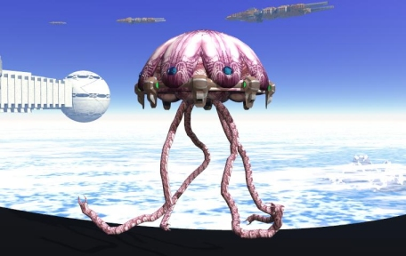

THE IYALI Introduction and Physical DescriptionThe Iyali are a radially symmetrical aquatic race native to Iyali IV, a world whose surface is mostly covered by salt water oceans. The Iyali are similar to opaque jellyfish in appearance. A large (10-20 feet in diameter) hemispheric "bell" with six fleshy sensory pods draping from the top forms the largest part of the Iyali's body. From the bottom of this hemisphere, four manipulating tentacles, which end in tripod-configured claws, hang to an average length of 30 feet. The Iyali's mouth is located at the base of the bell in the center of the manipulatory tentacles, and it is ringed with some several thousand fully retractable feeding tentacles or "oral arms" studded with paralytic venom-producing stingers that are used to paralyze prey and draw it into the Iyali's mouth. These oral arms can extend to some 40-60 feet in length. Uniquely, these oral arms also have the remarkable ability to extrude semiconductive material from their surfaces which can be used to produce extremely pure wires from trace metals harvested from the water around them. Iyali range in color from a light pink to a deep purple, and they often have complex tattoos on their sensory pods denoting station, rank, or other information. Occasionally, the Iyali implant cybernetic pathways into these markings to facilitate their interface with their technology. Senses and DietIyali have a complex sensory suite and brain structure. Rather than a central brain similar to most other living creatures, the Iyali intelligence center is distributed throughout its hemispherical body in clusters of cells deep within itself. These "brains" are connected via thin, metallic strands of nerve bundles in a ring around the Iyali's hemisphere; they have, in effect, six main sensory brains (one for each of the sensory pods which surround the Iyali's hemisphere) and a central brain which routes data between them and controls the sensors on the bottom of the hemisphere, around the mouth. Iyali perceive the universe through these six sensory pods. These pods both produce and receive sound and light waves via a membrane which is both photosensitive and vibration-sensitive. Iyali communicate amongst themselves via a pattern of visual light and sound vibrations which travel great distances through water; the superior sound conduction of water requires Iyali to use technology to boost the decibel level of their normal "voices" when speaking with outsiders. The Iyali move through water via a large muscle-lined pocket inside their mouths which intakes and expels water, propelling them at great speeds. Iyali are carnivorous, with a diet consisting almost exclusively of marine life, although their contact with other races (specifically the Sorvu) have led to their learning to enjoy land animals and plants in their diet. ReproductionThe Iyali develop in four distinct stages: the larval stage, the polyp stage, the ephyrae stage, and the medusa stage. An adult female Iyali produces eggs and holds them around her mouth. The male Iyali then releases sperm into the water, and the female uses her oral arms and tentacles to bring in the sperm and fertilize her eggs. The eggs stay on the female's oral arms and grow into round, flat larvae that are released into the water. The larvae are carried through the water until they find a hard surface which they attach to, such as a rock or a shell. After the larvae settle they develop into polyps, which resemble sea anemones. Polyps usually develop over a period lasting a few months. At the end of this period polyps begin to form horizontal grooves that deepen through the body until the single polyp is transformed into a stack of individuals, much like a stack of pancakes. Flattened polyps enter the third stage of development as they break off the stack one by one and swim away. These young Iyali (called ephyrae) now begin to resemble the familiar adult form called a medusa, as they develop tentacles and oral arms. An Iyali in the adult medusa stage has a life expectancy of some 500 years on the origin planet's home seas, but significant variations in pressure, temperature, and gravity on the planets which the Iyali have colonized cause this to vary widely. Iyali spending most of their time in a null-gravity environment with significant humidity (as is the case when they are using their suspensor harnesses) can have lifespans which reach into the millennia. Culture and ArtIyali culture is based strongly on the Iyali religion. The Iyali "worship" mathematical constants, placing a great deal of importance on universal constants such as the speed of light in vacuum, pi, the square root of negative one, and the number zero. Iyali use base six mathematics, and most of their structures and technology are built with six sides. Their systems of timekeeping, economics, and music are all calculated (and very orderly) in base six. The Iyali constantly strive to more fully comprehend the universe by more fully becoming one with the mathematical constants that its creator set in place; they are always searching for new constants in their worship and studies. Iyali are very creative despite their logical minds; they are concerned with practical applications of the mathematics they feel are a gift from the universal creator as well as aesthetically pleasing ones. Hence Iyali artwork is usually a variety of fractal or geometrically pleasing images. Society and HistoryIyali do not live in cities in the traditional sense. In an aquatic setting, which is the case with most of their colonies, the Iyali move very quickly under their own power. Hence, such settings usually feature small congregations of 10-50 Iyali of both sexes separated by large distances. When the Iyali do construct "buildings", they are often free-floating gossamer-like structures crafted from the wires which they can naturally produce, woven into basic geometric shapes such as hexagons and spheres. These buildings are often grouped together in specialized "industrial parks", devoted to specific phases of production. Almost every Iyali building cluster has a college or school of some kind where Iyali congregate to study, exchange ideas, and discuss mathematics. The Iyali do not live inside structures underwater, preferring to float free; they keep what possessions they need in a belt around their hemispheric bodies. The Iyali have very little in the way of classism or social hierarchy (another area which annoys the Grune); individual Iyali often have several occupations and stations throughout their lives. Iyali leaders tend to be excellent mathematicians, good public speakers, and extremely outgoing. The brightest and most intelligent usually lead the Iyali. The Iyali arose over several millennia on their origin world, whose ocean-covered surface is only occasionally dotted with volcanic islands that have risen above the surface of the oceans. The world is rich in marine life, and the Iyali evolved from jellyfish to eventually dominate their ecosystem. The fact that their brains require nerve bundles encapsulated in metallic wire to function led to the evolution of organelles which act as semiconductors, enabling the Iyali to weave strands of thin metal wire from the trace metals in the ocean that surrounds them. The Iyali eventually used this ability to create vast computers in their underwater abodes resembling metallic spider's webs. Their natural ability to weave strands of different kinds of metal together, in scales close to the molecular level, has led the Iyali to develop some of the best technology in the galaxy, and their engineering ability is almost unparalleled. While the Iyali are not given to creating large buildings or other permanent structures under the waters of the planets they colonize, they have managed to create large structures in space, including water-filled, chemically-propelled starships which proved more than a match for the Grune when the two races originally met. As the Iyali have evolved into excellent natural predators of the sea, though they are quite dispassionate about such matters as war, the armaments they produce for starships are quite effective. The Iyali are also excellent at crafting electronic devices, and their miniaturized surveillance devices – originally created to explore the boundaries of their own planet, and then the space beyond – are envied by espionage organizations throughout the galaxy. PsychologyAs one might imagine from their worship of mathematical constants and their penchant for engineering, the average Iyali is quite logical in its mindset. They are curious creatures, by and large, and while they enjoy many emotional states, they often approach such things as humor and sadness from the perspective of explorers, testing the boundaries of their own feelings. The Iyali are gourmets, always seeking new and different tastes to experience – their sense of taste is highly developed, due to their oral arms' highly sensitive receptors which can differentiate metallic elements down to the parts-per-billion level, and they are always looking for a good meal. When encountered outside of water, such as in the Imperial Station, the Iyali are buoyed by null-gravity repulsor rings which support their hemispherical body and allow their manipulator arms to hang down to the ground, although those arms can reach in any direction, being invertebrate and thus prehensile. Relations with Other RacesSORVU: (Allied) This amphibious race has won the hearts of many Iyali. Not only are they the only major Imperial race that the Iyali can deal with underwater in their home territory, the agricultural developments that the Sorvu have made rival the Iyali's advancement in technology as well as appealing to their gourmet nature. Additionally, several Sorvu have taken up the Iyali's peculiar form of worship, lending a measure of respect and understanding to the two races' interactions with one another. GRUNE: (Rival) The Grune represent a severe annoyance to the Iyali. The militaristic reptilian race originally attempted to conquer the Iyali once the two races' expansionistic colonization of star systems around their origin worlds intersected, but were rebuffed by superior Iyali technology. While the Grune outnumbered the Iyali, the latter's armed forces rendered one Iyali ship worth twenty of the Grune's. Ever since, the Iyali have had to deal with clumsy attempts by the Grune to spy on their planets and steal their technology. Even so, the two races have managed to coexist relatively peacefully in the time after the Pax Imperium, though trade between the races is often begun with the Grune trying to pass off shoddy goods on the Iyali in return for sparkling treasures of high technology. THRILE: (Neutral) The Iyali are not as close to this race as the Grune are, but their relations are somewhat warm. The Iyali respect the inquisitive nature of the Thrile, even if they cannot quite fathom the psionic methods that the plant-based race have come to depend upon. The nature of the Shining Ones – the question central to the Thrile philosophy and culture – also fascinates the Iyali, and the two races often have symposiums and conferences to discuss their latest findings. Some Iyali have made use of Thrile techniques and artifact modifications to develop their own psionic talents, but the Iyali mindset does not seem to be fully compatible with such ideas, being more comfortable with technology than mental powers.
|